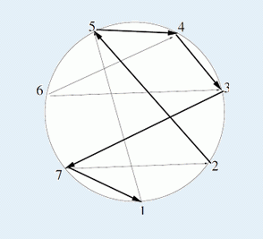

[Ceoi2012]Sailing Race
时间限制：10s 空间限制：128MB
题目描述
在一个圆环上，有N个地点，这些地点按照逆时针顺序用正整数1..N编号。有些地点间存在直线道路可以到达，但道路并不是双向的，也就是说如果存在a到b的道路，不一定同时存在b到a的道路。
现在你要从某个地点开始，沿着道路走，每个地点最多被经过一次，并且你走过的道路对应的线段只能在公共端点处相交。
但是有时候允许一些特例，具体说就是你走过的某条道路可以和最初走的道路相交最多一次。
你的任务是求出最多能走过的道路数，并给出一个可行的起点。

输入格式
第一行两个非负整数N, K。如果K = 0表示不允许特例，K = 1表示允许特例。
下面N行，依次描述每个地点可以到达的地点编号。每行以0结束。
输出格式
第一行一个非负整数，表示最多可以走的道路数。第二行一个正整数，表示一个可行的起点编号。如果存在多个起点满足要求，输出其中任何一个都可以。
样例输入
7 1 5 0 5 0 7 0 3 0 4 0 4 3 0 2 1 0
样例输出
5 2
提示
对于100%的数据满足：N ≤ 500。
请不要提交！
题目来源
鸣谢Oimaster